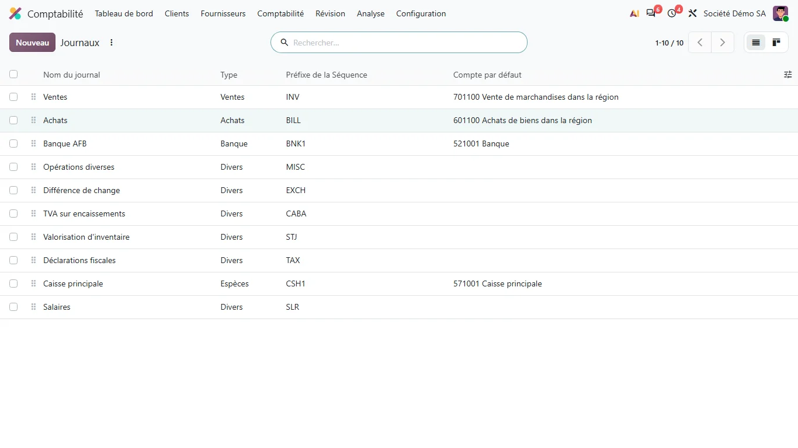
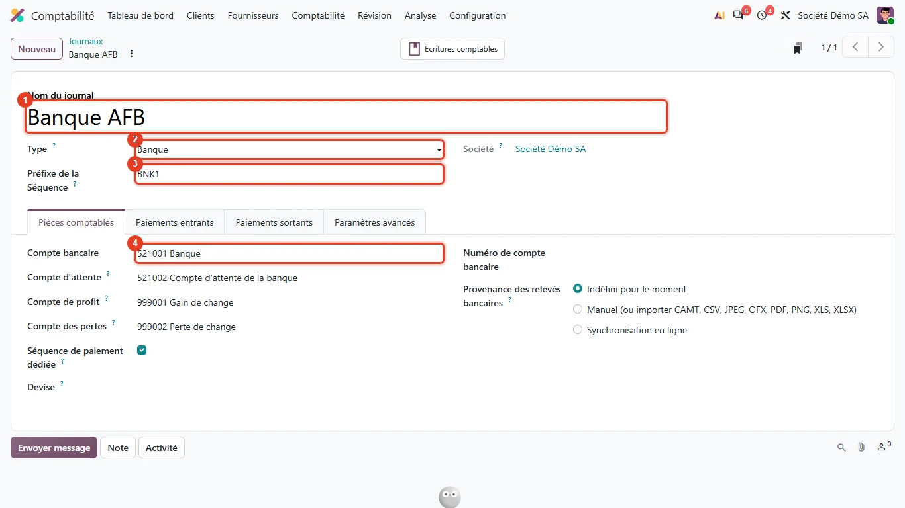

Créer et paramétrer un journal
Objectif. Créer un journal de banque, de caisse ou de ventes, avec son code et son compte.
Menu Odoo 15Comptabilité > Configuration > Journaux
Étapes
- Cliquez sur Nouveau : nom du journal (1) et type (2) (ventes, achats, banque, espèces, divers).
- Saisissez le code court (3) : il préfixe la numérotation des pièces.
- Pour une banque ou une caisse, vérifiez le compte (4) (52 ou 57).
- Enregistrez, puis testez avec une pièce en brouillon.


À vérifier
- Un journal par compte bancaire et par caisse.
À éviter
- Ne créez pas un journal par client pour des opérations de même nature.
Exercice
Créez un journal de caisse « Caisse 2 » relié au bon compte 57.